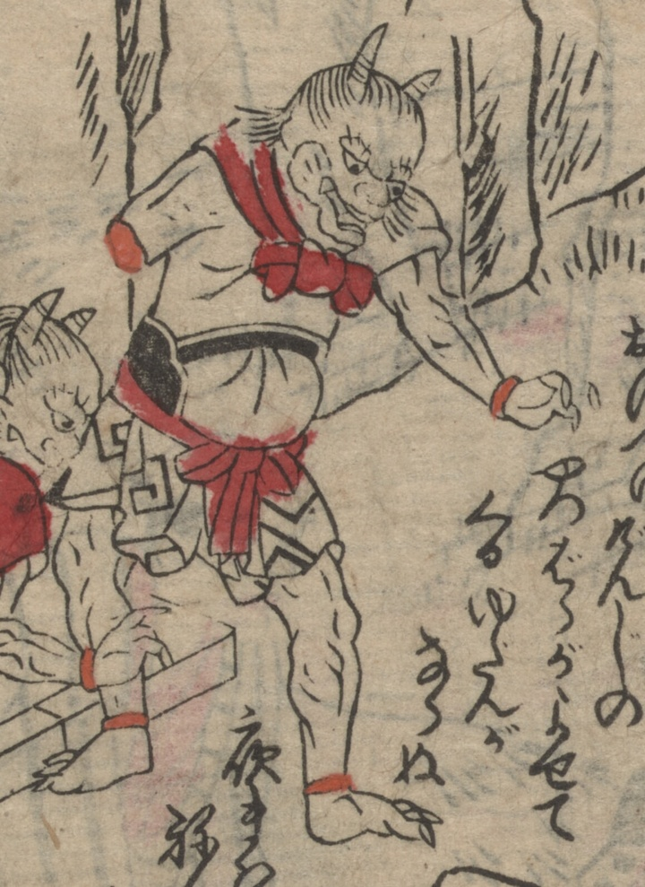

右手がない茨木童子。首に布を結び、腰に甲をあて、胸帯や腰巻をつけている。手下の鬼に忠告している。
著作者：不明／出典：親書誌：U426_nichibunken_0473：[絵本千丈嶽]；エホンセンジョウガタケ／日付：2025／資源識別子：U426_nichibunken_0473_0003_0005
Copyright (c)2010- International Research Center for Japanese Studies, Kyoto, Japan. All rights reserved.